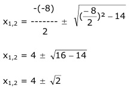
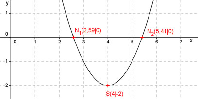

Aufgabe 38 Welche Koordinaten haben der Scheitelpunkt S und die Nullstellen N der folgenden Funktion? y = (x - 4)2 - 2 Dies ist die Scheitelpunktform. S abgelesen: S(4|-2) Nullstellen: y = 0 0 = (x – 4)2 - 2 0 = x2 - 8x + 16 - 2 0 = x2 - 8x + 14 p, q – Formel: p = -8 ; q = 14  x1,2 = 4 ± 1,41 x1 = 4 - 1,41 = 2,59 x2 = 4 + 1,41 = 5,41 N1(2,59|0) ; N2(5,41|0) 